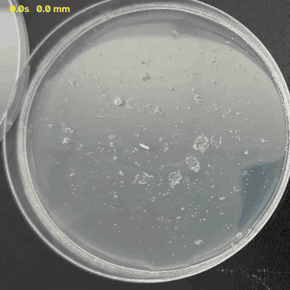
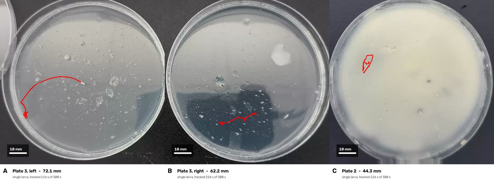
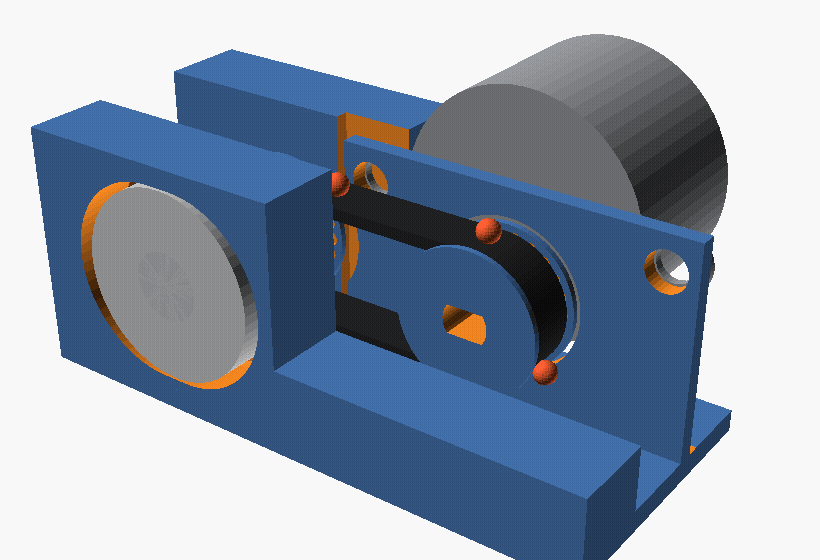
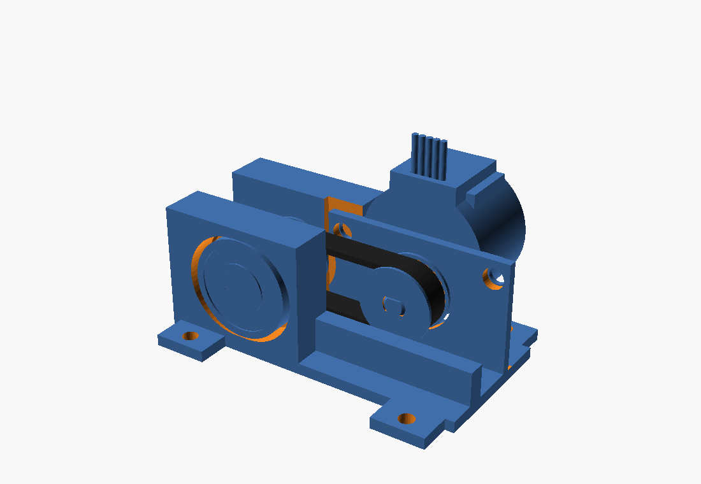
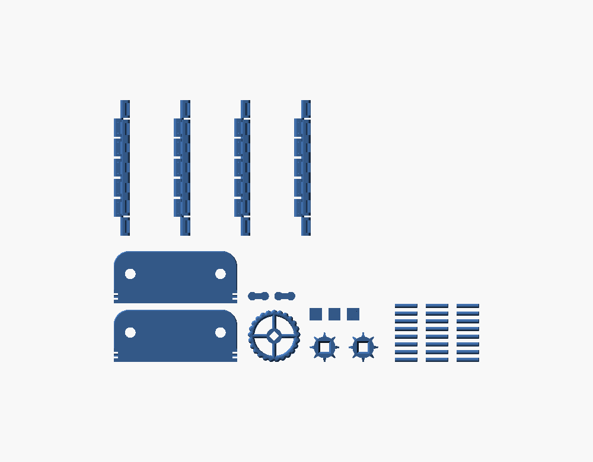

Tools for turning Drosophila assays into numbers: how far a larva crawls, how high flies climb, how many get stuck on fly paper, and a small treadmill to watch a single fly walk.
The foraging gene assay: rovers cover more ground than sitters, so the result you need from each plate is the path length in millimetres.
Open a plate video, give the dish diameter, and follow each larva with the mouse while the clip plays fast. It handles several larvae per plate, larvae on yeast, and clips with debris. It runs entirely in your browser and the video is never uploaded.
Open the tracer →A computer-vision tracker finds the larva, follows it, and returns the path length and a replay of the path being walked. On plain agar it was within 0.6% of a known path. It runs on a lab machine, not in the browser.


Climbing (negative geotaxis), flight (fly paper) and cold shock. Software counts the flies first, then a person checks every count in the browser before any number is used.
Finds the flies in each vial at 1–5 s after the tap and splits each vial into quadrants. A review page lets you click to add a fly it missed or remove one it got wrong.
Counts the real flies stuck in each zone between the red lines. It ignores the flies printed on the paper.
Turns the reviewed counts into a normalized spreadsheet and the graphs the lab handouts ask for, with error bars, statistical tests and figure legends.
A miniature belt treadmill that keeps a single fly walking in place, adapted from Pratt et al. (2024, Current Biology). It is 3D-printed, driven by a 28BYJ-48 stepper motor, and uses a 6 mm GT2 belt.



Printable files and build notes: treadmill/ on GitHub.
Automatic larva tracking, fly counting and graphing run on request, not as a public service. Email asahai2024@fau.edu with what you have (videos, photos) and what you need.
None of this is free. Each part has a real cost:
The tools were built and are kept working with paid AI models, and each request for AI analysis uses more of that paid time.
Automatic tracking takes minutes of processor time per clip. It runs on a personal machine that has to be switched on, and connecting it to the web uses a tunnel service.
Assay videos are large. Storing them, plus the web front ends and deployments, adds up.
The treadmill needs printer filament, a stepper motor, bearings, a GT2 belt and a shaft, plus the test prints it takes to get the fit right.
That is why automatic analysis is by request. If your lab uses these tools regularly, help covering the costs is what keeps them running.